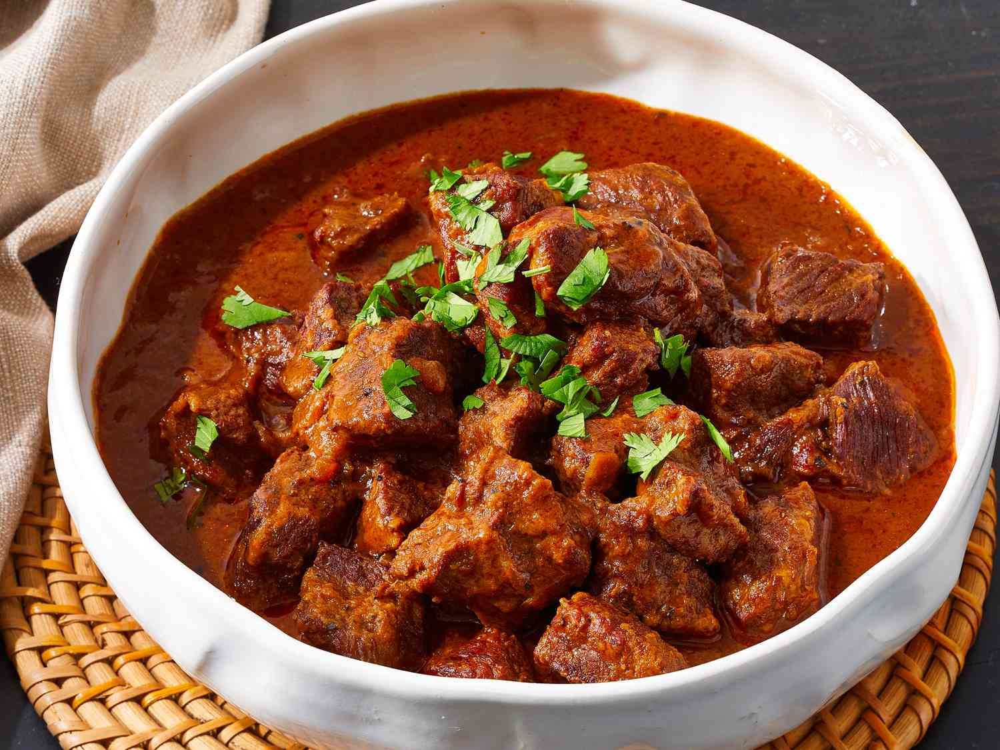

Home
Chile Colorado

Description
We make this Chile Colorado for my Mexican husband, who also doesn't like tomatoes in his chile. This is a
traditional Mexican-style dish. If you decide to add beans, do it after the chile is finished. Serve with
chopped onion, sliced green onion, shredded Cheddar cheese, and sour cream.
Ingredients
- 9 New Mexico dry chiles - washed, with stems and seeds removed
- 3 cups water
- 5 pounds boneless beef chuck roast, trimmed of fat
- ½ cup all-purpose flour
- 1 tablespoon kosher salt
- 1 tablespoon black pepper
- 3 tablespoons olive oil
- 1 large yellow onion, chopped
- 2 cups beef stock, or as needed
Steps
- Gather all ingredients.
- Place chiles and 3 cups water into a medium stockpot, and bring to a boil. Remove from heat and steep for 30
minutes to soften.
- Strain into a bowl, reserving the cooking liquid.
- Place chiles and some of the liquid into a blender, and purée until smooth. Add more liquid as necessary to
form a smooth sauce.
- Pass sauce through a fine mesh strainer to remove any seeds or tough skins; set aside.
- Cut beef into 1- to 2-inch chunks. Combine flour, salt, and pepper in a medium bowl. Dredge beef chunks in
the seasoned flour; set aside.
- Heat olive oil in a large pot over medium heat. Sauté onion until tender and translucent, about 5 minutes.
- Add beef chunks a few at a time, so as not to overcrowd the pot, and cook until evenly brown. Remove seared
meat, and continue browning the remaining meat. Return reserved seared meat to the pot.
- Stir in puréed chile mixture. Add beef stock just to cover beef chunks, or to personal preference. Bring to
a boil over medium heat. Reduce heat to lowest setting, and simmer for 3 hours, or until meat is tender. If
necessary, adjust with more stock during cooking.